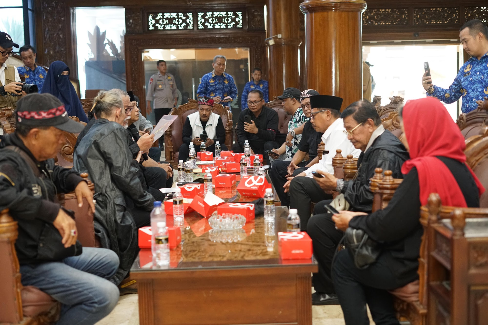

Dewan Perwakilan Rakyat Daerah (DPRD) Provinsi Jawa Timur mengambil langkah proaktif dengan menampung dan memfasilitasi secara resmi aspirasi massa yang tergabung dalam Pergerakan Eksponen Nasionalis 96. Kelompok masyarakat sipil tersebut menggelar aksi unjuk rasa dengan membawa tuntutan berskala nasional, yakni mendesak dimulainya proses pemakzulan terhadap Wakil Presiden Gibran Rakabuming Raka. Alih-alih meredam kebebasan berpendapat publik, institusi legislatif tingkat provinsi ini menerima tuntutan massa secara terbuka dan berkomitmen penuh untuk menyalurkannya secara kelembagaan kepada Dewan Perwakilan Rakyat Republik Indonesia (DPR RI) di ibu kota.
Penyampaian tuntutan publik tersebut berlangsung dalam sebuah aksi demonstrasi damai yang dipusatkan tepat di depan Gedung DPRD Provinsi Jawa Timur, Kota Surabaya, pada hari Selasa, 10 November 2026. Aksi turun ke jalan yang diwarnai dengan orasi kebangsaan serta aksi pencoretan simbolis foto Gibran tersebut terpantau berjalan dengan sangat kondusif. Pihak keamanan bersama jajaran perwakilan rakyat di daerah memastikan bahwa warga dapat menyuarakan hak demokrasinya dengan aman, sekaligus menjamin bahwa aspirasi dari jalanan ini tidak sekadar menguap melainkan dicatat secara formal oleh badan institusi terkait.
Gelombang protes dari Pergerakan Eksponen Nasionalis 96 ini dipicu oleh rentetan putusan hukum ketatanegaraan krusial yang terjadi dalam satu bulan terakhir. Keresahan massa bermula dari terbitnya putusan Mahkamah Konstitusi (MK) pada 6 Oktober 2026 yang menilai bahwa bukti ijazah Gibran tidak meyakinkan, yang kemudian disusul oleh putusan Mahkamah Agung (MA) pada 30 Oktober 2026 mengenai pembatalan surat keterangan penyetaraan pendidikannya. Merespons kompleksitas isu tersebut dan untuk mencegah eskalasi kebingungan serta konflik di ruang publik, DPRD Jawa Timur memilih mekanisme penyelesaian yang edukatif dan transparan. Mereka memproses tuntutan tersebut secara administratif tanpa mengobral janji-janji politik kosong yang jelas-jelas melampaui yurisdiksi kewenangan legislatif daerah.

Menanggapi desakan dari demonstran, Ketua DPRD Provinsi Jawa Timur, Drs. M. Musyafak Rouf, menegaskan bahwa pihaknya mendengarkan aspirasi tersebut dengan saksama karena didasari oleh produk hukum tertinggi di republik ini. "Namun kami juga memberikan edukasi yang jujur bahwa proses pemakzulan adalah hak konstitusional mutlak milik Senayan," jelas Musyafak guna memberikan pemahaman ketatanegaraan kepada massa. Ia menjamin langkah yang diambil institusinya adalah tindakan konkret, bukan sekadar basa-basi politik. "Kami memilih tidak mengobral janji yang bisa memicu harapan keliru. Kami berkomitmen menjadi saluran nyata bagi rakyat. Surat resmi dari pimpinan dewan dan badan aspirasi akan segera meluncur ke Jakarta. Langkah administratif ini kami ambil sebagai bentuk penghormatan terhadap hak demokrasi warga negara. Kami ingin memastikan keadilan dan kepastian hukum yang mereka perjuangkan mendapatkan saluran yang tepat, bermartabat, dan damai," tegasnya.
Melalui pendekatan humanis dan prosedural yang diterapkan dalam menghadapi dinamika politik yang sensitif ini, DPRD Jawa Timur menegaskan fungsinya sebagai representasi masyarakat yang sesungguhnya. Gedung wakil rakyat dipastikan selalu terbuka bagi setiap elemen warga yang ingin mengutarakan pendapatnya secara tertib dan selalu mematuhi koridor hukum yang berlaku. Di bawah komando kepemimpinan saat ini, lembaga perwakilan tersebut berupaya keras mengedepankan tata kelola yang objektif dan berlandaskan konstitusi, sekaligus menjadi barometer kedewasaan berdemokrasi dalam merawat stabilitas sosial-politik di wilayah Jawa Timur.